library(tidyverse)
library(janitor)
dados <- read_csv("data/sao-paulo-properties-april-2019.csv") |>
clean_names() |>
mutate(id = row_number())
set.seed(42)
dados |>
slice_sample(n=5)3 Aluguel de apartamentos na cidade de São Paulo
Imagine uma imobiliária ou uma plataforma de anúncios que precisa sugerir um valor de aluguel para um apartamento recém-cadastrado, ou identificar anúncios muito acima (ou muito abaixo) do que o mercado pratica para imóveis semelhantes. Este capítulo mostra como construir e avaliar modelos que estimam o valor do aluguel de apartamentos na cidade de São Paulo a partir de suas características.
Duas perguntas guiam a análise:
- Descritiva: como o aluguel varia entre as regiões da cidade e de acordo com a metragem, a quantidade de quartos, as vagas de garagem e o condomínio?
- Preditiva: é possível prever o valor do aluguel de um imóvel dadas as suas características? Com que margem de erro?
Neste capítulo percorremos, de ponta a ponta, o pipeline de construção de um modelo preditivo, seguindo as etapas do CRISP-DM (Cross-Industry Standard Process for Data Mining). Todo o trabalho neste capítulo é feito em R, com pacotes como tidyverse, rsample, rpart e randomForest.
| Etapa do CRISP-DM | Onde aparece no capítulo |
|---|---|
| Entendimento do negócio (business understanding) | Esta introdução: o problema e as perguntas que queremos responder |
| Entendimento dos dados (data understanding) | Análise descritiva inicial |
| Preparação dos dados (data preparation) | Limpeza das coordenadas, tratamento de categorias raras e separação em treinamento, validação e teste |
| Modelagem (modeling) | Regressão linear, árvore de decisão e floresta aleatória |
| Avaliação (evaluation) | Comparação na validação, erro de generalização no teste e importância das variáveis |
| Implantação (deployment) | Uso prático e implantação do modelo |
Na prática, essas etapas não são estritamente sequenciais: é comum voltar à preparação dos dados depois de avaliar um modelo, por exemplo. Aqui, por clareza, apresentamos cada uma em sequência.
Este conjunto de dados contém aproximadamente 13,6 mil anúncios de imóveis para venda e aluguel na cidade de São Paulo, Brasil. Os dados são provenientes de várias fontes, especialmente sites classificados de imóveis.
O conjunto de dados representa propriedades anunciadas no mês de abril de 2019 e contém as seguintes informações para cada propriedade. Note que os valores são preços anunciados, e não valores efetivamente negociados, e que refletem o mercado de um único mês, alguns anos atrás.
Price: preço anunciado, em reais (aluguel mensal nos anúncios de aluguel; valor de venda nos anúncios de venda),
Condo: despesas mensais de condomínio,
Size: tamanho da propriedade em metros quadrados \(m^2\) (apenas áreas privadas),
Rooms: Número de quartos,
Toilets: Número de banheiros,
Suites: Número de quartos com banheiro privativo,
Parking: Número de vagas de estacionamento,
Elevator: binário: 1 se houver elevador no prédio, 0 caso contrário,
Furnished: 1 se a propriedade é mobiliada, 0 caso contrário,
Swimming Pool: 1 se a propriedade tiver piscina, 0 caso contrário,
New: 1 se a propriedade for muito recente, 0 caso contrário,
District: bairro e a cidade onde a propriedade está localizada, ex: Itaim Bibi / São Paulo,
Negotiation Type: Venda ou Aluguel,
Property Type: tipo de propriedade,
Latitude: Localização - Latitude,
Longitude: Localização - Longitude.
O código abaixo carrega e exibe uma amostra dos dados.
| price | condo | size | rooms | toilets | suites | parking | elevator | furnished | swimming_pool | new | district | negotiation_type | property_type | latitude | longitude | id |
|---|---|---|---|---|---|---|---|---|---|---|---|---|---|---|---|---|
| 6900 | 1590 | 188 | 4 | 3 | 2 | 2 | 0 | 0 | 1 | 0 | Vila Mariana/São Paulo | rent | apartment | -23.59246 | -46.62818 | 10801 |
| 1150000 | 0 | 130 | 3 | 4 | 3 | 3 | 0 | 0 | 0 | 0 | Mandaqui/São Paulo | sale | apartment | -23.47766 | -46.63248 | 12261 |
| 2200 | 269 | 35 | 1 | 1 | 0 | 0 | 0 | 1 | 0 | 0 | Consolação/São Paulo | rent | apartment | -23.54836 | -46.64516 | 2369 |
| 9500 | 1800 | 169 | 3 | 5 | 3 | 3 | 0 | 0 | 0 | 0 | Brooklin/São Paulo | rent | apartment | -23.62416 | -46.68503 | 5273 |
| 5500 | 2990 | 196 | 4 | 3 | 1 | 3 | 1 | 0 | 1 | 0 | Santa Cecília/São Paulo | rent | apartment | -23.54057 | -46.65818 | 9290 |
DicaDica
O código acima usou a função clean_names() do pacote janitor, que tem por objetivo padronizar os nomes das variáveis presentes no conjunto de dados: todas as letras ficam minúsculas e os separadores são transformados em underscore (_).
Esta é uma boa prática de programação.
3.1 Análise Descritiva Inicial
Inicialmente, vamos ver os tipos de propriedades existentes na base de dados.
dados |>
group_by(property_type) |>
count()| property_type | n |
|---|---|
| apartment | 13640 |
Agora vamos analisar os diferentes tipos de negociação.
dados |>
group_by(negotiation_type) |>
summarize(prop = n() / nrow(dados), mean_price = mean(price))| negotiation_type | prop | mean_price |
|---|---|---|
| rent | 0.529912 | 3077.669 |
| sale | 0.470088 | 608624.140 |
Por se tratar de problemas distintos (aluguel e venda), vamos considerar apenas imóveis disponíveis para aluguel.
Além disso, vamos desconsiderar as variáveis district (por questão de simplicidade do modelo, já que a localização será capturada pela latitude e longitude), property_type, por serem todas de apartamento, e negotiation_type, pois, após essa filtragem, restarão apenas imóveis para aluguel.
dados_aluguel <- dados |>
filter(negotiation_type == "rent") |>
select(-negotiation_type, -district, -property_type)library(geobr)
# obter código IBGE do município
cod <- geobr::lookup_muni(name_muni = "São Paulo")$code_muni
municipio_sp <- geobr::read_municipality(code_muni = cod,
simplified = T,
showProgress = F)Abaixo estão as informações sobre as coordenadas do mapa da cidade de São Paulo:
municipio_spSimple feature collection with 1 feature and 4 fields
Geometry type: MULTIPOLYGON
Dimension: XY
Bounding box: xmin: -46.82619 ymin: -24.00826 xmax: -46.36531 ymax: -23.35629
Geodetic CRS: SIRGAS 2000
code_muni name_muni code_state abbrev_state geom
563 3550308 São Paulo 35 SP MULTIPOLYGON (((-46.57547 -...Agora veja as latitudes e longitudes presentes nos dados. Claramente há imóveis com algum problema na localização (por exemplo, coordenadas iguais a zero). Vamos retirar esses imóveis da nossa base.
n_antes_filtro <- nrow(dados_aluguel)
dados_aluguel |> select(latitude,longitude) |> summary() latitude longitude
Min. :-46.75 Min. :-58.36
1st Qu.:-23.60 1st Qu.:-46.69
Median :-23.56 Median :-46.64
Mean :-22.03 Mean :-43.50
3rd Qu.:-23.52 3rd Qu.:-46.59
Max. : 0.00 Max. : 0.00 dados_aluguel <- dados_aluguel |>
filter(longitude <= -46.36531,
longitude >= -46.82619,
latitude <= -23.35629,
latitude >= -24.00826)
n_removidos <- n_antes_filtro - nrow(dados_aluguel)Dos 7228 anúncios de aluguel, 518 (7.2%) foram removidos por terem coordenadas fora do município. Em uma aplicação real, vale investigar se esses registros podem ser recuperados (por exemplo, coordenadas com latitude e longitude trocadas, ou geocodificação a partir do bairro) antes de descartá-los.
Agora, vamos construir um gráfico que mostra o mapa da cidade e a localização dos imóveis considerados nesta análise.
Para isso, temos que representar o dataframe no formato sf.
Essa classe é usada para representar dados geográficos, especificamente aqueles que contêm informações espaciais (como coordenadas latitude e longitude).
A classe faz parte do pacote sf (Simple Features), que oferece uma maneira simples e eficiente de lidar com dados espaciais no R.
dados_aluguel_sf <- sf::st_as_sf(x = dados_aluguel,
coords = c("longitude", "latitude"),
crs = "+proj=longlat +datum=WGS84 +no_defs +ellps=WGS84 +towgs84=0,0,0")
ggplot(dados_aluguel_sf) +
geom_sf(data = municipio_sp)+
geom_sf(alpha = .05) +
ggthemes::theme_map() +
ggtitle("Localização dos Imóveis na Cidade de São Paulo") 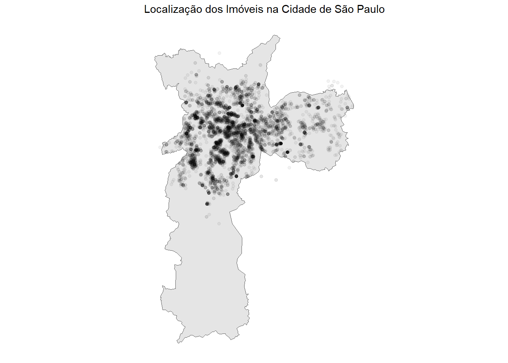
3.1.1 Aluguel por região
Como a localização é o principal fator de preço no mercado imobiliário, vale olhar para os bairros (distritos) antes de modelar. O gráfico abaixo mostra os 10 distritos com maior e os 10 com menor mediana de aluguel por metro quadrado, considerando apenas distritos com pelo menos 30 anúncios de aluguel.
ranking_distritos <- dados |>
filter(negotiation_type == "rent", size > 0) |>
mutate(distrito = str_remove(district, "/.*$"),
preco_m2 = price / size) |>
group_by(distrito) |>
summarise(n = n(),
mediana_preco_m2 = median(preco_m2),
.groups = "drop") |>
filter(n >= 30) |>
arrange(desc(mediana_preco_m2))
bind_rows(
ranking_distritos |> slice_head(n = 10) |> mutate(grupo = "Mais caros"),
ranking_distritos |> slice_tail(n = 10) |> mutate(grupo = "Mais baratos")
) |>
ggplot(aes(x = reorder(distrito, mediana_preco_m2),
y = mediana_preco_m2,
fill = grupo)) +
geom_col() +
coord_flip() +
labs(title = "Mediana do aluguel por m² nos distritos mais caros e mais baratos",
x = NULL,
y = "Mediana do aluguel por m² (R$)",
fill = NULL)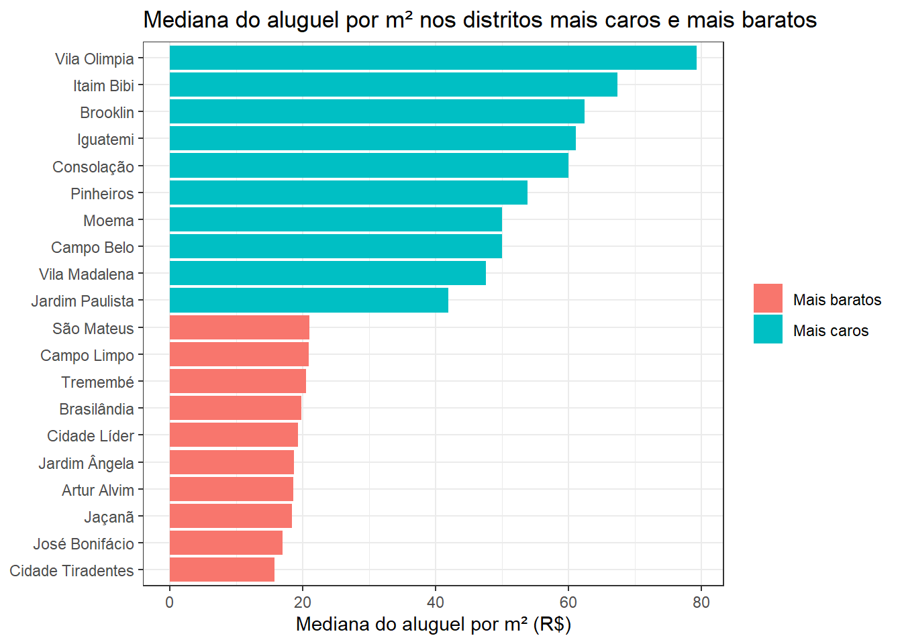
Note que a diferença entre regiões é grande, o que justifica incluir a localização (latitude e longitude) no modelo.
3.1.2 Relação do aluguel com as características do imóvel
Abaixo apresentamos a análise gráfica dos dados, com o objetivo de investigar a relação entre as preditoras e o valor de aluguel (variável price).
Nos gráficos de barras, categorias com menos de 30 anúncios foram omitidas (veja as tabelas de frequência logo após cada gráfico), pois a média de pouquíssimos anúncios é pouco confiável.
dados_aluguel |>
group_by(rooms) |>
summarise(price = mean(price), n = n()) |>
filter(n >= 30) |>
ggplot(aes(rooms, price)) +
geom_col() +
scale_y_continuous(expand = expansion(mult = c(0, .05))) +
scale_x_continuous(breaks = c(1:10)) +
labs(title = "Preço médio de aluguel por quantidade de quartos",
x = "Quartos",
y = "Preço médio")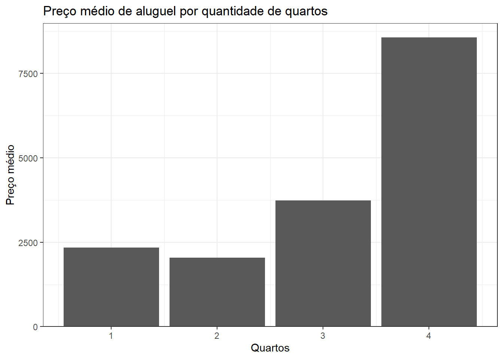
dados_aluguel |>
group_by(rooms) |>
summarise(perc = 100 * n()/nrow(dados_aluguel))| rooms | perc |
|---|---|
| 1 | 15.3502235 |
| 2 | 45.2757079 |
| 3 | 32.2056632 |
| 4 | 6.9448584 |
| 5 | 0.1788376 |
| 6 | 0.0298063 |
| 10 | 0.0149031 |
dados_aluguel |>
group_by(toilets) |>
summarise(price = mean(price), n = n()) |>
filter(n >= 30) |>
ggplot(aes(x = toilets, y = price)) +
geom_col() +
labs(title = "Preço médio de aluguel por quantidade de banheiros",
x = "Banheiros",
y = "Preço médio") +
scale_y_continuous(expand = expansion(mult = c(0, .05))) +
scale_x_continuous(breaks = c(1:10))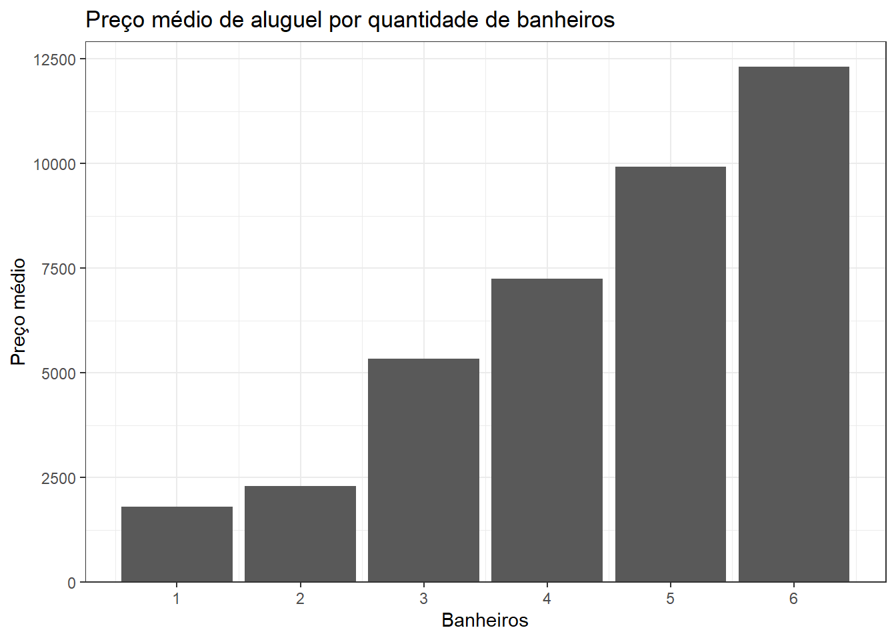
dados_aluguel |>
group_by(toilets) |>
summarise(perc = 100 * n()/nrow(dados_aluguel))| toilets | perc |
|---|---|
| 1 | 20.7004471 |
| 2 | 61.0581222 |
| 3 | 6.9150522 |
| 4 | 7.0342772 |
| 5 | 3.5916542 |
| 6 | 0.5663189 |
| 7 | 0.1043219 |
| 8 | 0.0298063 |
dados_aluguel |>
group_by(suites) |>
summarise(price = mean(price), n = n()) |>
filter(n >= 30) |>
ggplot(aes(x = suites, y = price)) +
geom_bar(stat="identity", width=0.5) +
labs(title = "Preço médio de aluguel por quantidade de suítes",
x = "Suítes",
y = "Preço médio") +
scale_y_continuous(expand = expansion(mult = c(0, .05))) +
scale_x_continuous(breaks = c(0:10))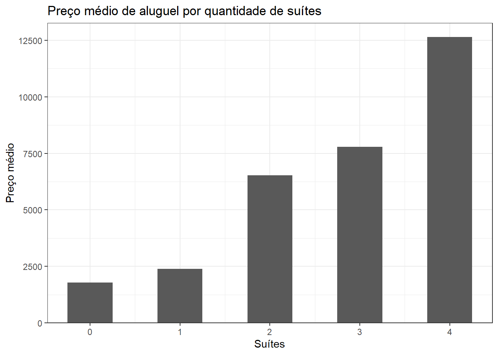
dados_aluguel |>
group_by(suites) |>
summarise(perc = 100 * n()/nrow(dados_aluguel))| suites | perc |
|---|---|
| 0 | 21.0879285 |
| 1 | 64.2771982 |
| 2 | 4.9776453 |
| 3 | 7.3621461 |
| 4 | 2.2503726 |
| 5 | 0.0447094 |
dados_aluguel |>
group_by(parking) |>
summarise(price = mean(price), n = n()) |>
filter(n >= 30) |>
ggplot(aes(parking, price)) +
geom_bar(stat="identity", width=0.5) +
labs(title = "Preço médio de aluguel por quantidade de vagas de estacionamento",
x = "Vagas de estacionamento",
y = "Preço médio") +
scale_y_continuous(expand = expansion(mult = c(0, .05))) +
scale_x_continuous(breaks = c(0:10))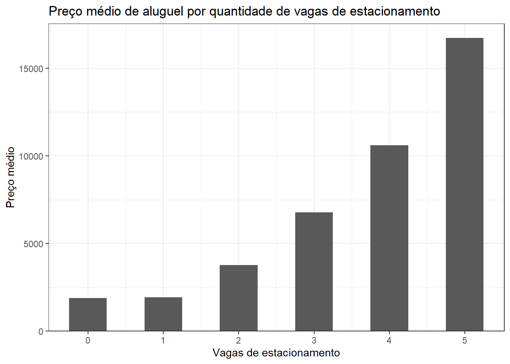
dados_aluguel |>
group_by(parking) |>
summarise(perc = 100 * n()/nrow(dados_aluguel))| parking | perc |
|---|---|
| 0 | 3.5916542 |
| 1 | 62.7719821 |
| 2 | 22.3695976 |
| 3 | 7.3919523 |
| 4 | 2.9657228 |
| 5 | 0.6855440 |
| 6 | 0.1341282 |
| 7 | 0.0447094 |
| 8 | 0.0298063 |
| 9 | 0.0149031 |
ggplot(dados_aluguel,
aes(x=swimming_pool, y=price, group=swimming_pool)) +
geom_boxplot() +
labs(title = "Distribuição do preço de aluguel por existência de piscina",
x = "Piscina",
y = "Preço de aluguel (escala logarítmica)") +
scale_x_continuous(breaks = c(0:1)) +
scale_y_log10()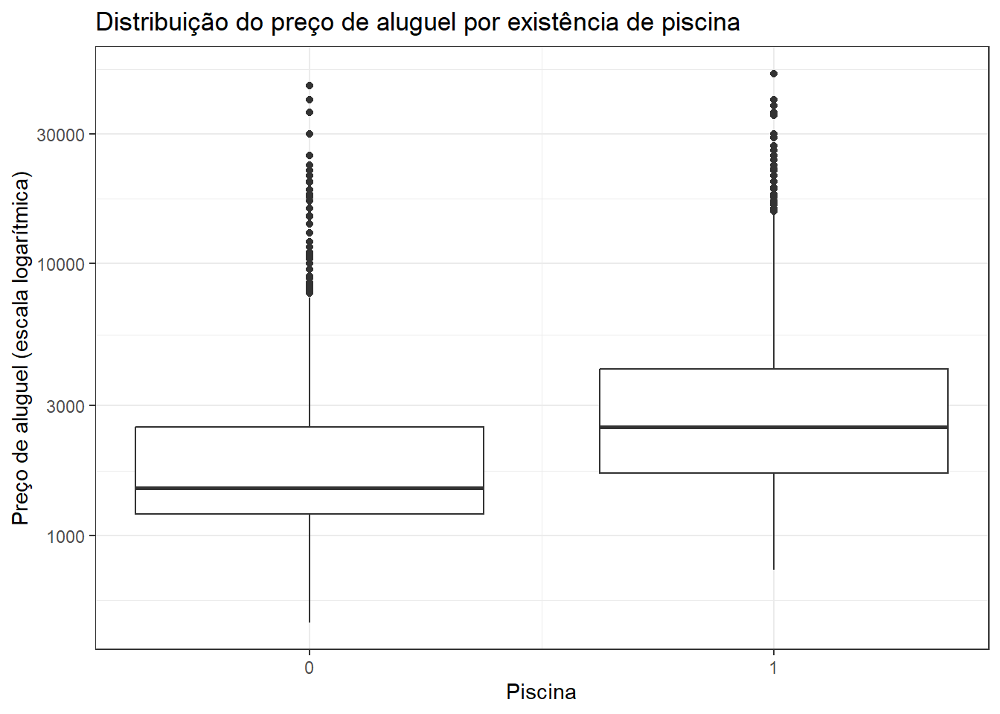
dados_aluguel |>
group_by(swimming_pool) |>
summarise(perc = 100 * n()/nrow(dados_aluguel))| swimming_pool | perc |
|---|---|
| 0 | 50.99851 |
| 1 | 49.00149 |
ggplot(dados_aluguel,
aes(x=furnished, y=price, group=furnished)) +
geom_boxplot() +
labs(title = "Distribuição do preço de aluguel por status de mobiliado",
x = "Mobiliado",
y = "Preço de aluguel (escala logarítmica)") +
scale_x_continuous(breaks = c(0:1)) +
scale_y_log10()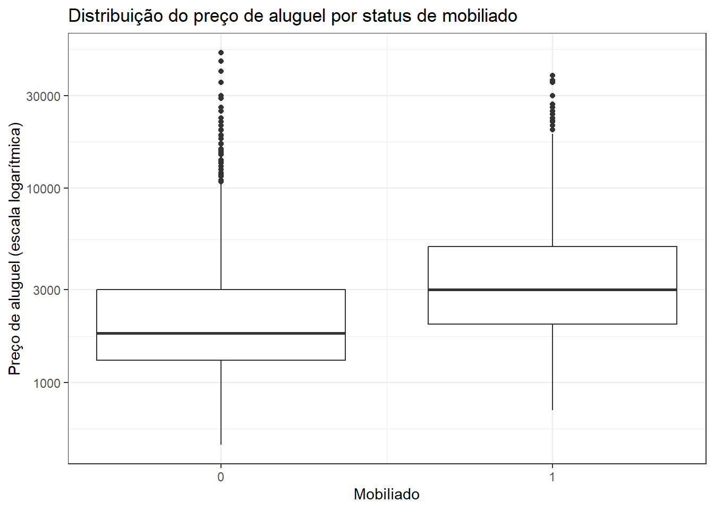
dados_aluguel |>
group_by(furnished) |>
summarise(perc = 100 * n()/nrow(dados_aluguel))| furnished | perc |
|---|---|
| 0 | 82.48882 |
| 1 | 17.51118 |
AvisoAtenção
Os dois últimos gráficos de boxplot apresentam o eixo y na escala logarítmica. Essa abordagem é útil especialmente quando os valores discrepantes (outliers) estão muito acima (ou abaixo) dos valores que estão próximos à mediana e ao intervalo interquartílico. Lembre-se também de que o boxplot mostra a mediana, e não a média.
AvisoAtenção aos dados
- Em 8.9% dos anúncios de aluguel o condomínio é igual a zero. Isso pode significar ausência de condomínio (ou condomínio incluso no aluguel) ou simplesmente informação não preenchida. Aqui mantemos o valor como está, mas essa é uma decisão que, em um projeto real, deve ser validada com quem conhece a origem dos dados.
- Os preços são os anunciados em abril de 2019. Para uso atual, seria necessário atualizá-los (inflação, mudanças de mercado) ou coletar dados mais recentes.
3.2 Separação dos dados
Antes de dividir os dados, agrupamos as categorias muito raras de rooms e toilets em “5+”. Categorias com pouquíssimos imóveis podem aparecer apenas em um dos conjuntos (por exemplo, só no teste), o que impede o modelo linear de fazer previsões para esses imóveis.
str(dados_aluguel)tibble [6,710 × 14] (S3: tbl_df/tbl/data.frame)
$ price : num [1:6710] 930 1000 1000 1000 1300 1170 1000 900 1000 1000 ...
$ condo : num [1:6710] 220 148 100 200 410 0 180 150 0 0 ...
$ size : num [1:6710] 47 45 48 48 55 50 52 40 65 100 ...
$ rooms : num [1:6710] 2 2 2 2 2 2 1 2 2 2 ...
$ toilets : num [1:6710] 2 2 2 2 2 2 2 2 2 2 ...
$ suites : num [1:6710] 1 1 1 1 1 1 1 1 1 1 ...
$ parking : num [1:6710] 1 1 1 1 1 1 1 1 1 1 ...
$ elevator : num [1:6710] 0 0 0 0 1 0 1 0 0 0 ...
$ furnished : num [1:6710] 0 0 0 0 0 0 0 0 0 0 ...
$ swimming_pool: num [1:6710] 0 0 0 0 0 0 0 0 0 0 ...
$ new : num [1:6710] 0 0 0 0 0 0 0 0 0 0 ...
$ latitude : num [1:6710] -23.5 -23.6 -23.5 -23.5 -23.5 ...
$ longitude : num [1:6710] -46.5 -46.5 -46.5 -46.5 -46.5 ...
$ id : int [1:6710] 1 2 3 4 5 6 7 8 9 10 ...dados_aluguel <- dados_aluguel |>
mutate(rooms = if_else(rooms >= 5, "5+", as.character(rooms)),
toilets = if_else(toilets >= 5, "5+", as.character(toilets))) |>
mutate(rooms = as.factor(rooms),
toilets = as.factor(toilets),
furnished = as.factor(furnished),
swimming_pool = as.factor(swimming_pool))A divisão em treinamento, validação e teste é feita de forma estratificada pelo preço: como o aluguel tem cauda longa à direita (poucos imóveis muito caros), a estratificação garante que os três conjuntos tenham distribuições de preço semelhantes.
library(rsample)
set.seed(123)
split_treino_teste <- initial_split(dados_aluguel, prop = 0.8, strata = price)
split_treino_validacao <- initial_split(training(split_treino_teste),
prop = 0.8, strata = price)
dados_treinamento <- training(split_treino_validacao)
dados_validacao <- testing(split_treino_validacao)
dados_teste <- testing(split_treino_teste)Após a limpeza, restam 6710 anúncios de aluguel, divididos em treinamento (4293), validação (1074) e teste (1343).
3.3 Treinamento de Modelos
Nesta análise, abordaremos três modelos: regressão linear, árvore de decisão e floresta aleatória.
Os dados já foram divididos em conjuntos de treinamento, validação e teste. Cada um dos três modelos será treinado utilizando o conjunto de treinamento. As métricas de erro serão calculadas usando o conjunto de validação. Com isso, poderemos selecionar o melhor modelo, aquele que apresentar o menor erro no conjunto de validação.
Após a escolha do melhor modelo, iremos reestimá-lo utilizando todos os dados dos conjuntos de treinamento e validação combinados. Em seguida, avaliaremos o erro deste modelo final no conjunto de teste, fornecendo uma boa estimativa do erro de generalização esperado para este modelo em novos dados.
A coluna id serve apenas para identificar cada anúncio e não deve ser usada como variável preditora. Por isso, ela é removida do conjunto usado para ajustar os modelos.
treino <- dados_treinamento |> select(-id)3.3.1 Modelo de Regressão Linear
Vamos aplicar o modelo de regressão linear ao conjunto de treinamento e avaliá-lo utilizando o conjunto de validação.
mod_linear <- lm(price ~ ., data = treino)
pred_linear <- predict(mod_linear, dados_validacao)
df_pred <- tibble(id = dados_validacao$id,
y_obs = dados_validacao$price,
y_pred = pred_linear,
modelo = "linear")O gráfico abaixo apresenta o resultado do modelo de regressão linear aplicado aos dados. Cada ponto no gráfico representa uma observação do valor do aluguel, sendo o eixo x o valor observado e o eixo y o valor predito pelo modelo. A linha vermelha indica a linha de igualdade, onde os valores observados são iguais aos valores preditos. Idealmente, os pontos devem estar alinhados ao longo dessa linha, indicando uma boa predição do modelo.
df_pred |>
ggplot(aes(y_obs, y_pred)) +
geom_abline(slope = 1, intercept = 0, color = "salmon", linewidth = 2) +
geom_point(alpha = 0.1) +
labs(title = "Modelo de Regressão Linear - Resultado",
x = "Valor do Aluguel Observado",
y = "Valor do Aluguel Predito")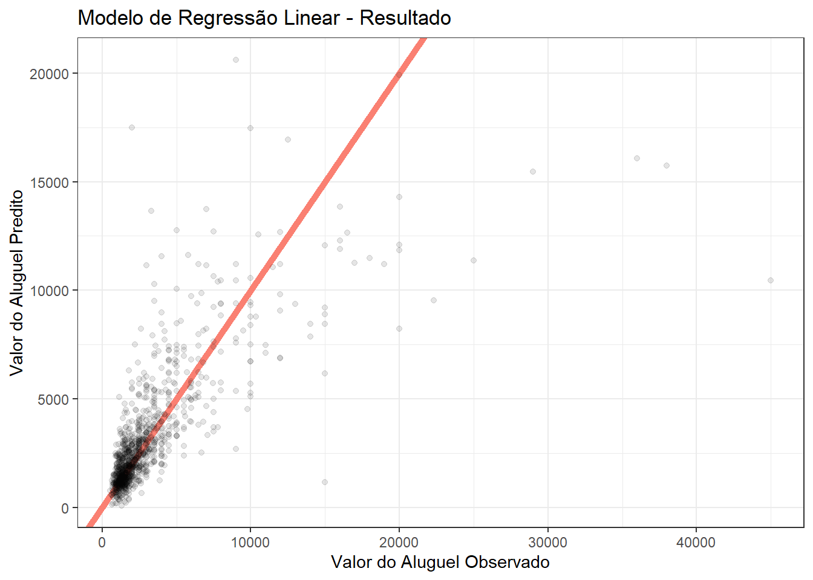
Interpretando os coeficientes
Uma vantagem da regressão linear é a interpretabilidade: cada coeficiente indica a variação esperada no aluguel associada a um aumento de uma unidade na variável, mantidas as demais constantes.
library(broom)
coef_lm <- tidy(mod_linear, conf.int = TRUE) |>
filter(term %in% c("size", "condo", "suites", "parking", "elevator",
"new", "furnished1", "swimming_pool1")) |>
select(termo = term, estimativa = estimate,
ic_inferior = conf.low, ic_superior = conf.high)| termo | estimativa | ic_inferior | ic_superior |
|---|---|---|---|
| condo | 0.82 | 0.67 | 0.96 |
| size | 29.07 | 26.55 | 31.59 |
| suites | 525.50 | 300.07 | 750.93 |
| parking | 553.81 | 418.69 | 688.94 |
| elevator | 35.60 | -115.64 | 186.84 |
| furnished1 | 1104.09 | 917.75 | 1290.43 |
| swimming_pool1 | 205.18 | 56.23 | 354.13 |
| new | -103.50 | -4530.81 | 4323.82 |
Por exemplo, cada metro quadrado adicional está associado, em média, a um aluguel R$ 29,07 maior, e cada vaga de estacionamento adicional a R$ 553,81, mantidas as demais variáveis constantes.
AvisoAtenção
Essas são associações, e não efeitos causais. Além disso, variáveis como size, condo, suites e parking são correlacionadas entre si (imóveis maiores tendem a ter mais suítes, mais vagas e condomínio mais caro), o que torna a interpretação isolada de cada coeficiente delicada.
O modelo também foi ajustado diretamente sobre o preço em reais. Como o aluguel é muito assimétrico, uma alternativa comum é modelar o logaritmo do preço, o que torna os coeficientes interpretáveis como variações percentuais e costuma melhorar o ajuste. Experimente fazer isso como exercício.
3.3.2 Modelo de Árvore de Decisão
Vamos aplicar o modelo de árvore de decisão ao conjunto de treinamento e avaliá-lo utilizando o conjunto de validação.
library(rpart)
mod_arvore <- rpart(price ~ ., data = treino)
rpart.plot::rpart.plot(mod_arvore)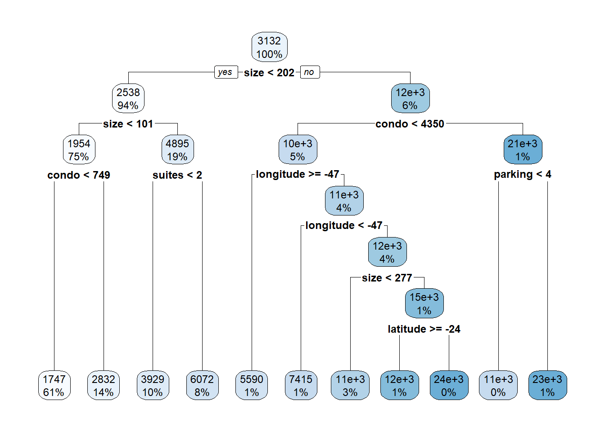
A árvore de decisão gerada para prever o valor do aluguel (price), utilizando os dados de treinamento, é visualizada acima. Cada nó na árvore representa uma decisão baseada em uma característica do imóvel, e os ramos indicam o resultado dessa decisão, levando a novas decisões ou a um valor de aluguel previsto (nós folha). A porcentagem em cada nó indica a proporção de observações do conjunto de treinamento que se enquadram naquele critério, e o número em destaque é o aluguel médio previsto para esse grupo de imóveis.
Neste ajuste, a árvore foi construída com 4293 imóveis, tem 11 nós folha e a primeira divisão é feita pela variável size (corte em 202).
Como ler a árvore:
- Comece pelo nó raiz (topo), que contém todos os imóveis do treinamento (100%).
- Em cada nó, a condição indica o critério da divisão: se verdadeira (“yes”), siga o ramo da esquerda; caso contrário (“no”), o da direita.
- Ao chegar a um nó folha (terminal), o valor exibido é o aluguel médio previsto para todos os imóveis que seguem aquele caminho.
Observações sobre a árvore de decisão:
- As variáveis que aparecem no topo da árvore são as que mais reduzem a variabilidade do preço nas primeiras divisões. As que aparecem em níveis mais baixos refinam as previsões para subconjuntos mais específicos de imóveis.
- A árvore foi ajustada com os parâmetros padrão do
rpart(por exemplo,cp = 0.01), o que resulta em poucos nós folha. Todos os imóveis de um mesmo nó recebem exatamente a mesma previsão, o que limita a precisão do modelo. - Em compensação, a árvore é muito fácil de explicar: o caminho até a folha é uma regra de negócio do tipo “imóveis com tal metragem e tal condomínio custam, em média, tanto”.
Para praticar: escolha um imóvel do conjunto de validação e percorra a árvore até a folha correspondente. Confira se o valor encontrado é o mesmo obtido com predict(mod_arvore, dados_validacao[1, ]).
pred_arvore <- predict(mod_arvore, dados_validacao)
df_pred <- df_pred |>
bind_rows(tibble(id = dados_validacao$id,
y_obs = dados_validacao$price,
y_pred = pred_arvore,
modelo = "árvore"))
df_pred |>
filter(modelo == "árvore") |>
ggplot(aes(y_obs, y_pred)) +
geom_abline(slope = 1, intercept = 0, color = "lightgreen", linewidth = 2) +
geom_point(alpha = 0.1) +
labs(title = "Modelo de Árvore de Decisão - Resultado",
x = "Valor do Aluguel Observado",
y = "Valor do Aluguel Predito")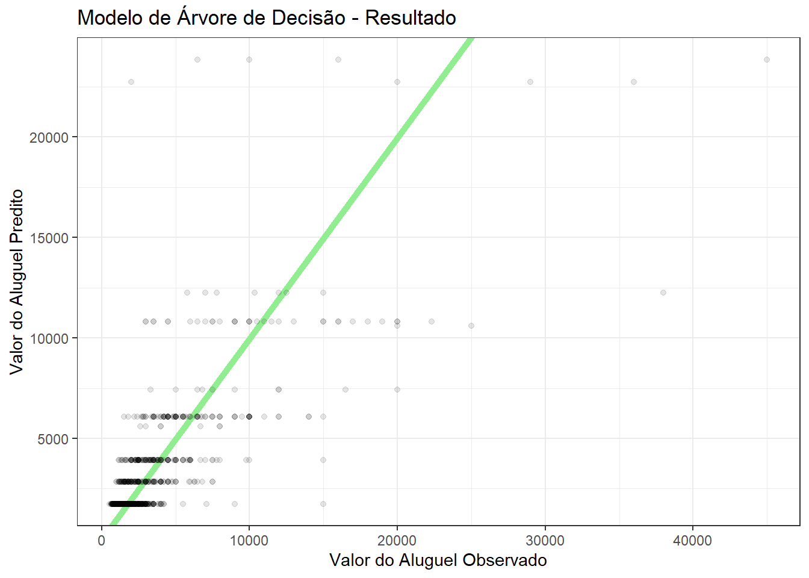
DicaDica
Observe que os valores preditos pela árvore de decisão apresentam um padrão (linhas horizontais) por conta da forma como o modelo é construído!
3.3.3 Modelo de Floresta Aleatória
Vamos aplicar o modelo de floresta aleatória ao conjunto de treinamento e avaliá-lo utilizando o conjunto de validação.
library(randomForest)
set.seed(123)
mod_floresta <- randomForest(price ~ ., data = treino)
pred_floresta <- predict(mod_floresta, dados_validacao)
df_pred <- df_pred |>
bind_rows(tibble(id = dados_validacao$id,
y_obs = dados_validacao$price,
y_pred = pred_floresta,
modelo = "floresta aleatória"))
df_pred |>
filter(modelo == "floresta aleatória") |>
ggplot(aes(y_obs, y_pred)) +
geom_abline(slope = 1, intercept = 0, color = "lightblue", linewidth = 2) +
geom_point(alpha = 0.1) +
labs(title = "Modelo de Floresta Aleatória - Resultado",
x = "Valor do Aluguel Observado",
y = "Valor do Aluguel Predito")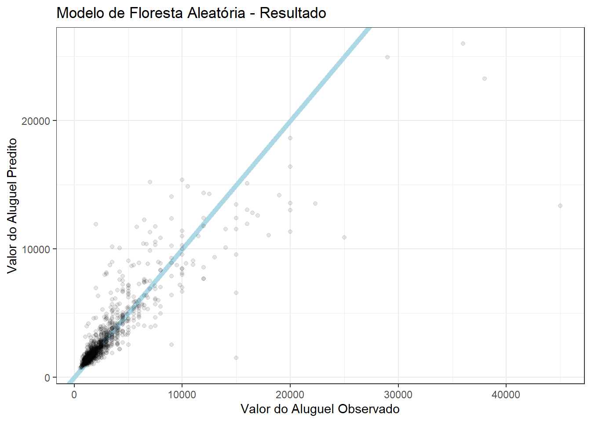
Comparativo da performance dos modelos na validação
Veja na tabela abaixo os valores preditos por cada modelo para cada observação do conjunto de validação. São esses valores que serão utilizados para calcular o erro de cada modelo e, consequentemente, escolher o melhor entre eles.
df_pred |>
pivot_wider(names_from = modelo, values_from = y_pred) |>
slice_sample(n = 20)| id | y_obs | linear | árvore | floresta aleatória |
|---|---|---|---|---|
| 10721 | 2000.00 | 5488.39 | 3928.77 | 4613.50 |
| 1270 | 2000.00 | 17481.70 | 22740.00 | 11918.85 |
| 2174 | 2300.00 | 1059.81 | 1746.61 | 1539.25 |
| 594 | 1100.00 | 1687.79 | 1746.61 | 1326.13 |
| 266 | 1000.00 | 1259.47 | 1746.61 | 1156.75 |
| 2025 | 1600.00 | 1085.96 | 1746.61 | 1129.33 |
| 3660 | 1200.00 | 1484.45 | 1746.61 | 1361.45 |
| 1986 | 3000.00 | 3720.24 | 3928.77 | 4579.97 |
| 2990 | 1600.00 | 805.67 | 1746.61 | 1360.59 |
| 3380 | 11500.00 | 11071.58 | 10822.82 | 11010.67 |
| 1550 | 2350.00 | 3907.39 | 3928.77 | 3773.24 |
| 3772 | 7000.00 | 13734.66 | 12240.67 | 15217.25 |
| 4885 | 5500.00 | 4378.66 | 6072.40 | 5350.94 |
| 1977 | 3000.00 | 6022.80 | 10822.82 | 8048.46 |
| 1870 | 6500.00 | 5276.85 | 6072.40 | 5373.39 |
| 10406 | 1000.00 | 180.40 | 1746.61 | 998.32 |
| 5370 | 2000.00 | 1264.31 | 1746.61 | 1638.27 |
| 11143 | 8000.00 | 5751.78 | 3928.77 | 5515.46 |
| 686 | 1700.00 | 1337.25 | 1746.61 | 1621.01 |
| 2897 | 1500.00 | 1572.99 | 1746.61 | 1385.14 |
Para comparar os modelos, usamos duas métricas, ambas na mesma unidade do aluguel (reais):
- Erro quadrático médio (EQM) e sua raiz, a REQM (RMSE): penaliza mais os erros grandes.
- Erro absoluto médio (MAE): é a média dos erros em valor absoluto e tem uma leitura direta para um gestor: “em média, o modelo erra X reais para mais ou para menos”.
Incluímos também um modelo de referência (baseline), que prevê para todos os imóveis a média do aluguel no treinamento. Ele serve de régua mínima: um modelo só é útil se for claramente melhor do que isso.
calcular_metricas <- function(df) {
df |>
summarise(eqm = mean((y_obs - y_pred)^2),
reqm = sqrt(eqm),
MAE = mean(abs(y_obs - y_pred)))
}
df_baseline <- tibble(id = dados_validacao$id,
y_obs = dados_validacao$price,
y_pred = mean(dados_treinamento$price),
modelo = "baseline (média)")
tabela_metricas_val <- bind_rows(df_pred, df_baseline) |>
group_by(modelo) |>
calcular_metricas() |>
arrange(reqm)| Modelo | EQM | REQM | MAE |
|---|---|---|---|
| floresta aleatória | 3420792 | 1849.54 | 781.87 |
| árvore | 5633734 | 2373.55 | 1198.30 |
| linear | 5797646 | 2407.83 | 1155.45 |
| baseline (média) | 13217475 | 3635.58 | 2036.02 |
O modelo com menor erro no conjunto de validação foi a floresta aleatória, com REQM de R$ 1.850 e MAE de R$ 782. Para comparação, o baseline, que prevê sempre a média, tem REQM de R$ 3.636 e MAE de R$ 2.036.
Veja de forma gráfica os valores da REQM.
tabela_metricas_val |>
ggplot(aes(x = factor(modelo, levels = modelo), y = reqm, fill = modelo)) +
geom_col(show.legend = FALSE) +
geom_text(aes(label = round(reqm)), vjust = -0.4) +
scale_fill_manual(values = c("floresta aleatória" = "lightblue",
"árvore" = "lightgreen",
"linear" = "salmon",
"baseline (média)" = "gray80")) +
scale_y_continuous(expand = expansion(mult = c(0, .1))) +
labs(x = NULL, y = "Raiz do Erro Quadrático Médio (R$)",
title = "Erro no Conjunto de Validação")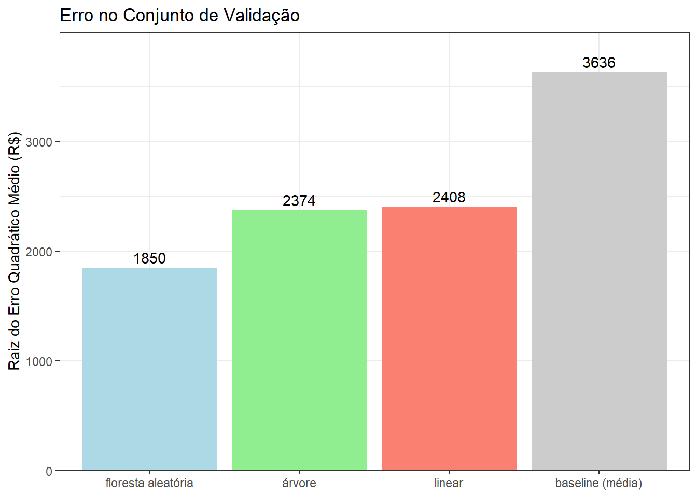
NotaLimitações desta comparação
Os três modelos foram ajustados com seus parâmetros padrão, sem ajuste fino de hiperparâmetros e sem validação cruzada. A árvore, em particular, está limitada por cp = 0.01. Portanto, a comparação vale para estas configurações específicas, e não para o melhor que cada família de modelos poderia alcançar.
3.4 Cálculo do erro de generalização
Vamos agora refazer a estimação do melhor modelo utilizando o conjunto de treinamento e validação combinados.
Em seguida, vamos avaliar o erro de generalização no conjunto de testes.
novo_treinamento <- dados_treinamento |>
bind_rows(dados_validacao)
treino_final <- novo_treinamento |> select(-id)
set.seed(123)
mod_floresta_final <- randomForest(price ~ ., data = treino_final,
importance = TRUE)
pred_floresta <- predict(mod_floresta_final, dados_teste)
pred_final <- tibble(y_obs = dados_teste$price,
y_pred = pred_floresta,
modelo = "floresta aleatória")
baseline_teste <- tibble(y_obs = dados_teste$price,
y_pred = mean(novo_treinamento$price),
modelo = "baseline (média)")
tabela_metricas_teste <- bind_rows(pred_final, baseline_teste) |>
group_by(modelo) |>
calcular_metricas() |>
arrange(reqm)Os resultados estão apresentados na tabela abaixo.
| Modelo | EQM | REQM | MAE |
|---|---|---|---|
| floresta aleatória | 2039744 | 1428.20 | 692.66 |
| baseline (média) | 9896003 | 3145.79 | 1955.38 |
De acordo com nossas estimativas, em novos imóveis a floresta aleatória erra, em média, cerca de R$ 693 (MAE), com REQM de R$ 1.428. Para dar uma ideia de escala, o aluguel mediano no conjunto de teste é de R$ 2.000, de modo que o erro absoluto médio equivale a cerca de 35% desse valor. O baseline tem MAE de R$ 1.955.
Quando a REQM é bem maior do que o MAE, isso indica que há alguns erros muito grandes, tipicamente em imóveis de alto padrão, que são raros e difíceis de prever.
3.5 Importância das Variáveis
Ao avaliar a importância das variáveis em um modelo de regressão, como a floresta aleatória utilizada neste estudo, podemos identificar quais características mais contribuem para as previsões do modelo.
Isso é fundamental para entender o comportamento do modelo e validar se as variáveis mais importantes fazem sentido do ponto de vista do domínio do problema.
Aqui usamos a importância por permutação: para cada variável, embaralhamos seus valores e medimos o quanto o erro do modelo aumenta. Quanto maior o aumento, mais o modelo depende da variável. Todas as variáveis do modelo são exibidas.
imp <- randomForest::importance(mod_floresta_final, type = 1, scale = FALSE)
imp_df <- tibble(variavel = rownames(imp), importancia = imp[, 1]) |>
arrange(desc(importancia))
ggplot(imp_df, aes(x = importancia, y = reorder(variavel, importancia))) +
geom_col() +
labs(x = "Aumento do EQM ao permutar a variável (R$²)", y = NULL)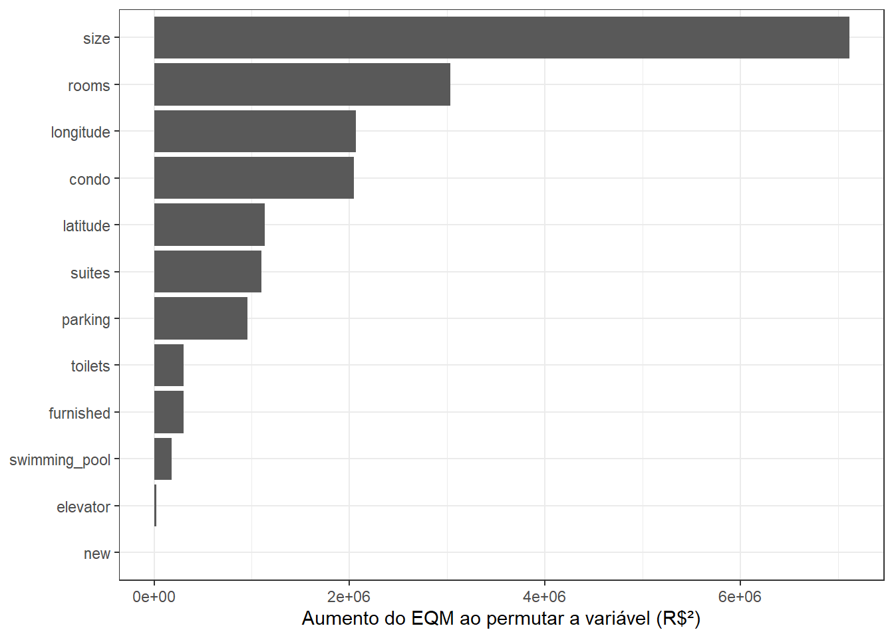
O gráfico mostra que o modelo depende, acima de tudo, do tamanho do imóvel: a importância de size é mais que o dobro da da segunda colocada, rooms. Na sequência aparecem longitude e condo, praticamente empatadas, depois latitude, suites e parking. Por fim, toilets, furnished, swimming_pool, elevator e new contribuem pouco ou quase nada. Como o eixo está em unidades de EQM (R$²), o que importa é a comparação entre as barras, e não o valor absoluto de cada uma.
Relacionando com o que se espera do mercado imobiliário:
- Metragem: é coerente que o tamanho seja o principal determinante do aluguel, já que ele define diretamente o espaço que está sendo alugado.
- Localização:
longitudeelatitudeaparecem separadas, mas descrevem uma única informação (onde o imóvel está). Somadas, ficam em um patamar semelhante ao deroomse acima do decondo, o que é consistente com o peso da localização na formação de preços em uma cidade tão heterogênea quanto São Paulo. Essa soma é apenas um indicativo, pois a importância conjunta das duas variáveis não é exatamente a soma das individuais. - Condomínio: funciona como um indicador do padrão do prédio (serviços, áreas comuns, infraestrutura), e por isso carrega informação que vai além do tamanho.
- Número de quartos: aparecer em segundo lugar merece cautela.
roomsé fortemente correlacionada comsize,suitesetoilets, e, ao embaralhar seus valores, o teste de permutação cria combinações pouco realistas (como um imóvel de 30 m² com cinco quartos), que aumentam o erro do modelo de forma artificial. Parte dessa importância pode refletir esse efeito, e não um peso próprio dos quartos no preço. - Itens de baixa importância:
swimming_pool,furnished,elevatorenewpouco alteram a previsão. Isso não significa que não influenciem o aluguel. Esses atributos podem ser redundantes com outras variáveis (prédios com piscina e elevador tendem a ter condomínio mais alto, por exemplo) ou variar pouco nos dados.
Do ponto de vista prático, o resultado indica que, para estimar bem um aluguel, o mais importante é ter informações confiáveis sobre metragem, localização e condomínio. Atributos adicionais, como piscina ou elevador, acrescentam pouco ao modelo depois que essas informações já estão disponíveis.
Cuidados ao interpretar:
- Importância mede o quanto o modelo usa a variável para prever, e não o quanto ela “causa” o preço. Dizer, por exemplo, que “inquilinos não valorizam piscina” a partir de uma importância baixa seria uma conclusão além do que os dados permitem.
- Variáveis correlacionadas (como
size,suites,toilets,parkingecondo) tendem a dividir a importância entre si, o que pode subestimar cada uma individualmente. condoesizefuncionam, em parte, como indicadores do padrão do imóvel. A localização é capturada porlatitudeelongitudeem conjunto, e não por cada uma isoladamente.
Os gráficos de Dependência Parcial (PDP) permitem visualizar como a predição média do aluguel varia em função de uma variável, mantendo-se os valores observados das demais. Abaixo estão os gráficos para size, condo, parking e rooms.
library(pdp)
g1 <- mod_floresta_final |>
partial(pred.var = "size", train = treino_final) |>
ggplot(aes(size, yhat)) +
geom_line() +
labs(x = "Size", y = "Price (pred)")
g2 <- mod_floresta_final |>
partial(pred.var = "condo", train = treino_final) |>
ggplot(aes(condo, yhat)) +
geom_line() +
labs(x = "Condo", y = "Price (pred)")
g3 <- mod_floresta_final |>
partial(pred.var = "parking", train = treino_final) |>
mutate(parking = as.factor(parking)) |>
ggplot(aes(parking, yhat)) +
geom_col() +
labs(x = "Parking", y = "Price (pred)")
g4 <- mod_floresta_final |>
partial(pred.var = "rooms", train = treino_final) |>
mutate(rooms = as.factor(rooms)) |>
ggplot(aes(rooms, yhat)) +
geom_col() +
labs(x = "Rooms", y = "Price (pred)")
library(patchwork)
g1 + g2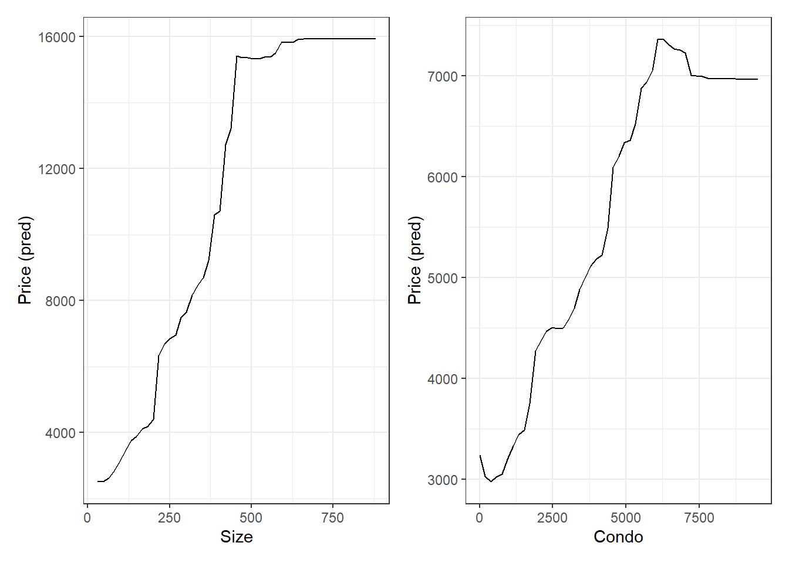
g3 + g4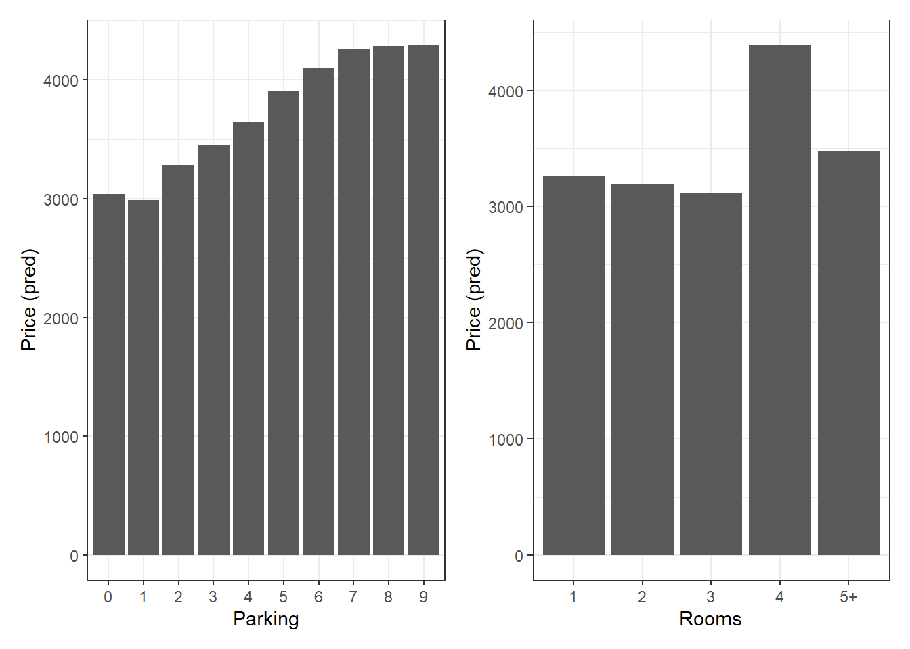
Os quatro gráficos mostram o preço predito médio quando apenas a variável em questão varia (valores aproximados, lidos do gráfico):
size: a curva é crescente e é a de maior amplitude, indo de cerca de R$ 2.500 (imóveis pequenos) a cerca de R$ 15.500 em torno de 450 m². O trecho mais inclinado fica entre 200 e 450 m². Depois de 500 m² a curva fica plana, o que reflete a falta de dados nessa faixa e a incapacidade da floresta de extrapolar, e não um limite real do preço.condo: o preço predito cresce de forma geral com o condomínio, de cerca de R$ 3.000 a R$ 7.300 (por volta de R$ 6.000 de condomínio), e depois se estabiliza em torno de R$ 7.000. Há uma pequena queda no início da curva, provavelmente associada a anúncios com condomínio zero ou muito baixo. O patamar final se deve novamente à escassez de dados em valores altos.parking: o preço cresce de forma gradual com o número de vagas, de cerca de R$ 3.000 (0 ou 1 vaga) a cerca de R$ 4.300 (7 ou mais), com ganhos que diminuem nas faixas mais altas. A diferença entre 0 e 1 vaga é praticamente nula. Imóveis com muitas vagas são raros, então o final da curva é pouco confiável.rooms: o padrão não é monotônico: de 1 a 3 quartos o preço predito é praticamente o mesmo (cerca de R$ 3.100 a R$ 3.250), com um pico em 4 quartos (cerca de R$ 4.400) e valor intermediário em 5 ou mais.
Interpretação: size é, de longe, a variável de maior efeito (amplitude de cerca de R$ 13 mil, contra cerca de R$ 4 mil em condo e R$ 1.300 em parking e rooms), o que é coerente com o ranking de importância. O comportamento de rooms indica que o número de quartos, isoladamente, explica pouco do preço quando a metragem já é conhecida. O pico em 4 quartos provavelmente reflete imóveis amplos e de alto padrão nessa categoria, e não um efeito próprio dos quartos.
Ao ler os PDPs, lembre-se de que a floresta não extrapola: fora da faixa de valores observados nos dados de treinamento, a curva tende a ficar plana. Além disso, como as variáveis são correlacionadas, o PDP pode incluir combinações pouco realistas (por exemplo, um imóvel de 30 m² com condomínio de luxo).
3.6 Uso prático e implantação do modelo
A última etapa do CRISP-DM é a implantação (deployment): colocar o modelo para apoiar uma decisão real. Um modelo só gera valor quando alguém o usa.
Para que serve este modelo. Com o erro que estimamos no teste (MAE de R$ 693, cerca de 35% do aluguel mediano), o modelo é adequado como apoio à decisão, por exemplo para:
- sugerir uma faixa de preço a quem está cadastrando um imóvel;
- sinalizar anúncios muito acima ou abaixo do esperado para imóveis semelhantes;
- dar uma referência rápida para negociação.
Ele não é adequado para fixar o preço final de um imóvel, já que o erro típico ainda é relevante e há imóveis, sobretudo os de alto padrão, em que o erro é bem maior.
Qual modelo usar. A floresta aleatória foi a mais precisa, mas é a menos transparente. Quando é preciso justificar o valor a um cliente (por exemplo, “quanto vale cada vaga ou cada m² adicional”), a regressão linear, mais simples e interpretável, pode ser preferível, mesmo com erro maior. A escolha depende do que importa mais para o negócio: precisão ou transparência.
Como seria o uso em R. O modelo final pode ser salvo e carregado para gerar previsões para novos imóveis. O novo imóvel precisa ter as mesmas variáveis do treinamento, com as categorias nos mesmos níveis.
# salvar o modelo treinado
saveRDS(mod_floresta_final, "modelo_aluguel_rf.rds")
# em outra sessão: carregar e prever para um novo imóvel
modelo <- readRDS("modelo_aluguel_rf.rds")
novo_imovel <- tibble(
condo = 700, size = 65, suites = 1, parking = 1,
elevator = 1, new = 0,
latitude = -23.56, longitude = -46.65,
rooms = factor("2", levels = levels(treino_final$rooms)),
toilets = factor("2", levels = levels(treino_final$toilets)),
furnished = factor("0", levels = levels(treino_final$furnished)),
swimming_pool = factor("0", levels = levels(treino_final$swimming_pool))
)
predict(modelo, novo_imovel)Manutenção do modelo. O mercado imobiliário muda, e um modelo treinado com dados de abril de 2019 perde precisão com o tempo. Em produção, seria preciso monitorar o erro do modelo comparando previsões com aluguéis efetivamente praticados, e retreiná-lo periodicamente com dados atualizados.
3.7 Conclusão
Neste estudo, percorremos as etapas de construção de um modelo preditivo para o aluguel de apartamentos na cidade de São Paulo, a partir de 6710 anúncios de abril de 2019. Comparamos três modelos (regressão linear, árvore de decisão e floresta aleatória), e a floresta aleatória apresentou o melhor desempenho no conjunto de validação, com REQM de R$ 1.850 contra R$ 3.636 do baseline que prevê sempre a média. No conjunto de teste, o erro absoluto médio estimado é de R$ , cerca de % do aluguel mediano.
A análise de importância e os gráficos de dependência parcial indicam que o tamanho do imóvel é o principal determinante do aluguel, seguido pela localização e pelo condomínio.
Limitações:
- Os preços são anunciados (não negociados) e de um único mês de 2019.
- Os modelos usam parâmetros padrão, sem ajuste fino nem validação cruzada.
- O preço foi modelado na escala original, sem transformação logarítmica.
- A localização entra apenas por latitude e longitude, sem informações de distrito, proximidade de transporte ou infraestrutura.
- Anúncios com coordenadas inválidas foram descartados (7.2% dos anúncios de aluguel).
Próximos passos: modelar o logaritmo do preço, ajustar hiperparâmetros com validação cruzada, avaliar o erro por faixa de preço (o modelo erra mais nos imóveis caros?) e incluir o distrito como variável explicativa.
agora eu gostaria de uma proposta do que seria um anexo a este capitulo: SERIA UM ANEXO DO CAPITULO pra fazer o melhor modelo possivel, tratando a variavel district alem da localizacao lat long (ja que existe muita desigualdade em bairros vizinhos em sp - talvez agrupar alguns distritos) e tunando hiperparametro para ter um modelo otimo para sugerir preco de aluguel de um novo imovel. me de o qmd desse anexo e seja suscinto nas explicacoes.